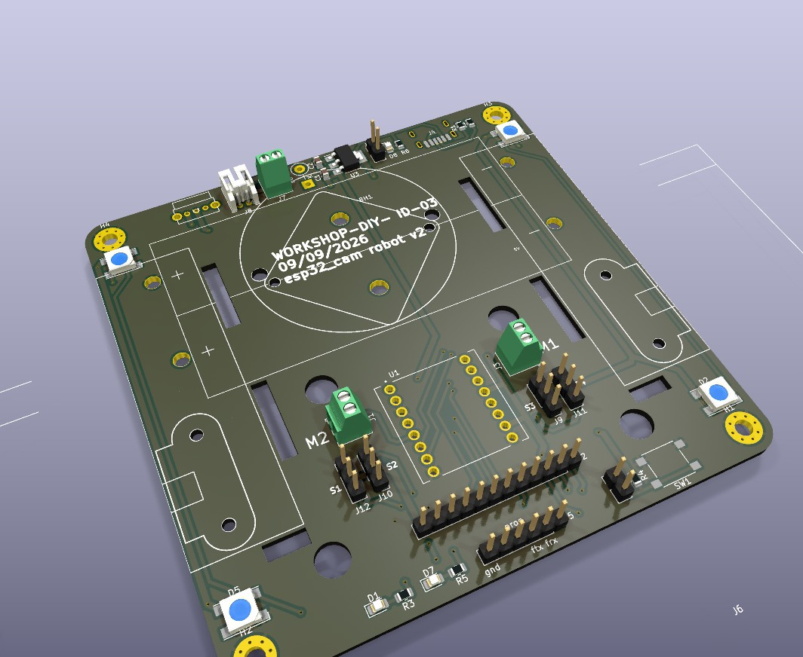
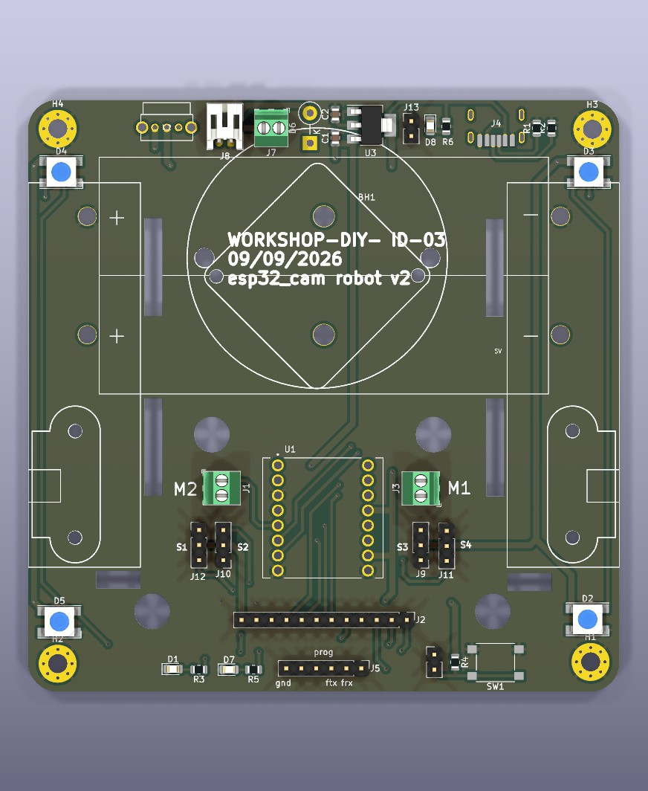

Robot ESP32-CAM v2 — firmware ESPHome
| Type | Firmware de robot : conduite, vidéo, LED d'état et écran, depuis une page web |
|---|---|
| Empilement | ESP32-CAM AI-Thinker → carte d'extension v3 → carte robot v2 |
| Moteurs | TB6612FNG sur la carte robot (J1, J3) |
| Lumières | 4 × RGB TX1812 (état), D1 + LED flash (phare) |
| Écran | OLED SSD1306 0,96″ sur la carte d'extension |
| Firmware | ESPHome 2026.7.3, framework Arduino, sous Linux ou Windows |
| Page web | Port 80 : caméra, boutons de conduite, Dance, couleurs et effets des LED, journal |
| Vidéo | MJPEG sur le port 8080, aussi affichée sur la page |
| Configuration | esp32_cam_robot.yaml |
| Assistant | launch.sh (menu pour enfants) |
| Ajout à la page | robot_page.js (vue caméra) |
| Fichiers KiCad | esp32_cam_robot_v2, esp32_cam_plugin_v3 |
| État | tourne sur le robot : Wi-Fi, page, caméra ; conduite à vérifier |
C'est le firmware de robot qui fait suite à la validation de la carte d'extension. Le banc de test a prouvé chaque partie séparément ; ce fichier les fait travailler ensemble, en un robot qu'on pilote depuis un téléphone.
Vue d'ensemble
Trois cartes s'empilent. L'ESP32-CAM s'enfiche sur la carte d'extension (v3), dont le connecteur 12 broches J4 s'enfiche sur J2 de la carte robot (v2). La carte robot apporte le pilote moteur, quatre LED RGB, les accus et l'interrupteur ; la carte d'extension apporte l'OLED et la LED D1. Les deux pilotes L9110 de la carte d'extension (U1, U3) ne sont pas montés sur ce robot : le TB6612 est le seul pilote moteur.
L'article de la carte d'extension l'appelle « rév. v4 » : c'est le même circuit migré vers KiCad 9. La carte réellement fabriquée est la v3 — mêmes réseaux, mêmes GPIO.


Le firmware tient en un seul fichier ESPHome. Une fois flashé, le robot rejoint le Wi-Fi, affiche son adresse sur l'OLED et sert une page avec la caméra en haut, des boutons de conduite, un bouton Dance, les couleurs et effets des LED, et le journal en direct. La vidéo est aussi sur le port 8080.
L'empilement et son brochage
Chaque broche ci-dessous vient de la netlist des deux cartes. La carte d'extension transmet les broches de l'ESP32 telles quelles à J2 : les deux cartes voient les mêmes signaux.
| Partie | Carte | Signal | GPIO | Remarque |
|---|---|---|---|---|
| Moteur A → J1 (sérigraphie « M2 ») | robot | AI1 | GPIO13 | broche 14 du TB6612 |
| AI2 | GPIO2 | broche de strapping | ||
| Moteur B → J3 (sérigraphie « M1 ») | BI1 | GPIO15 | broche de strapping | |
| BI2 | GPIO14 | broche 11 du TB6612 | ||
| RGB D5→D4→D3→D2 | robot | DIN | GPIO12 | broche de strapping ; D7 y est aussi reliée |
| OLED | extension | SDA | GPIO3 | UART0 — journal série coupé |
| SCL | GPIO1 | UART0 | ||
| LED D1 + LED flash | extension | DIN | GPIO4 | sert de phare |
| LED d'état D1 (robot) | robot | — | GPIO16 | non utilisée : sélection de la PSRAM |
| Bouton BOOT SW1, cavalier J6 | robot | IO0 | GPIO0 | non utilisé : horloge caméra |
| Connecteurs servo S1–S4 | robot | signal | 15, 13, 2, 14 | mêmes broches que les moteurs |
Sur la carte robot, les broches STBY, PWMA et PWMB du TB6612 sont reliées au 3V3. Le pilote est toujours actif et la vitesse se règle par PWM sur les broches IN — exactement comme un L9110, donc le ventilateur hbridge d'ESPHome le pilote sans changement. Les emplacements L9110 de la carte d'extension restent vides : ses borniers moteur J1/J3/J5 et son pont d'alimentation moteur J6/JP2 ne servent pas.
Alimentation : l'accu (ou J7/J8) passe par D6 et l'interrupteur vers VCC, qui alimente les moteurs (VM) et l'AMS1117-5.0. L'USB-C alimente directement le +5 V. Sur l'USB seul, les moteurs ne tournent que si J13 relie le +5 V à VCC.
Fichiers KiCad et de fabrication
Le projet KiCad 9 complet de la carte robot v2 est rangé à côté de cet article, dans files/esp32_cam_robot_v2 :
- esp32_cam_robot.kicad_sch — le schéma, et sa version PDF.
- esp32_cam_robot.kicad_pcb — la carte, 110 × 110 mm.
- esp32_cam_robot.kicad_pro et
.kicad_prl— le projet. Mettez les fichiers dans un même dossier et ouvrez le.kicad_pro. - production/ — ce qui a été envoyé au fabricant : zip Gerber, nomenclature, positions de placement, repères, netlist IPC.
La carte d'extension v3 posée dessus est rangée de la même façon, dans files/esp32_cam_plugin_v3 : schéma, carte, projet et fichiers de fabrication. Ses images sont dans l'article de la carte d'extension.




launch.sh : un menu pour les enfants
launch.sh regroupe chaque étape dans un menu en couleurs. Avant d'exécuter quoi que ce soit, il affiche la commande exacte après un ▶ jaune : les enfants voient ce que fait l'ordinateur au lieu d'une boîte noire. Placez-le à côté de esp32_cam_robot.yaml, puis :
chmod +x launch.sh
./launch.sh # le menu
./launch.sh compile # ou une étape directement| # | Option | Ce qu'elle fait |
|---|---|---|
| 1 | 🔍 Check install | Python, le venv, la version exacte d'ESPHome, le groupe dialout, les réglages Wi-Fi, une carte USB branchée |
| 2 | 📦 Install | Crée ~/esphome-venv, installe esphome==2026.7.3, propose d'ajouter l'utilisateur à dialout |
| 3 | 📶 Set Wi-Fi | Demande le réseau et le mot de passe (masqué) et écrit secrets.yaml |
| 4 | 🧪 Check config | esphome config ; n'affiche que la partie en erreur s'il y en a une |
| 5 | 🛠 Compile | esphome compile, puis vérifie qu'un fichier firmware existe vraiment |
| 6 | 🔌 Flash over USB | Liste de contrôle (moteurs éteints, cavalier J6, adaptateur sur J5), trouve le port, téléverse |
| 7 | 📡 Update over Wi-Fi | Téléverse vers esp32-cam-robot.local ou l'adresse affichée sur l'OLED |
| 8 | 📜 Watch logs | Journal en direct par le Wi-Fi |
| 9 | 🌐 Open robot page | Ouvre la page de commande et la vidéo dans le navigateur |
| 10 | 🧹 Clean | Supprime les fichiers de compilation |
Le menu est en anglais. Mettez ROBOT_IP=192.168.1.42 devant la commande pour ne pas retaper l'adresse. Le même script tourne sous Linux et dans Git Bash sous Windows ; là, les ports USB s'appellent COM3, COM4… et esphome est lancé sans MSYSTEM (voir Pièges).
Installer & flasher à la main
- Installez ESPHome dans son propre environnement virtuel, en fixant la version :
python3 -m venv ~/esphome-venv source ~/esphome-venv/bin/activate pip install esphome==2026.7.3 sudo usermod -aG dialout $USER # une fois, puis se déconnecter et se reconnecter - Téléchargez esp32_cam_robot.yaml. À côté, créez
secrets.yamlpour un réseau 2,4 GHz :wifi_ssid: "VotreWiFi" wifi_password: "VotreMotDePasse" - Vérifiez et compilez :
esphome config esp32_cam_robot.yaml esphome compile esp32_cam_robot.yaml - Premier flash par USB : moteurs éteints, cavalier sur J6 (IO0 à la masse), adaptateur USB-série sur J5 (
gnd,ftx,frx), USB-C pour l'alimentation. Puis :
Retirez le cavalier J6 et appuyez sur reset. L'OLED affiche l'adresse une vingtaine de secondes plus tard.esphome upload esp32_cam_robot.yaml --device /dev/ttyUSB0 - Les mises à jour suivantes passent par le Wi-Fi :
esphome upload esp32_cam_robot.yaml --device 192.168.1.42
Si le robot ne rejoint pas le réseau, cherchez le point d'accès esp32-cam-robot fallback : mauvais mot de passe, ou réseau uniquement en 5 GHz.
Conduire
Ouvrez http://<IP>. La page a cinq boutons et trois curseurs :
| Commande | Effet |
|---|---|
| Forward / Back | Les deux roues dans le même sens |
| Left / Right | Rotation sur place, roues en sens opposés |
| Stop | Freine immédiatement |
| Dance | Se tortille à gauche et à droite pendant 3 s avec les LED en arc-en-ciel ; Stop l'arrête |
| Speed preset | Slow (35 %), Normal (60 %) ou Turbo (100 %) en un clic |
| Speed | 20–100 %, s'applique à tout, conservée au redémarrage |
| Drive timeout | 0,3–5 s, 1 s par défaut : durée d'une commande |
| Drive X / Drive Y | −100…100 : entrée joystick pour une page perso ou Home Assistant |
X et Y sont mélangés sur les deux roues : gauche = Y + X, droite = Y − X, puis multipliés par Speed. Une page joystick ou un script n'a besoin que de deux appels REST :
curl -X POST "http://192.168.1.42/number/drive_y/set?value=60"
curl -X POST "http://192.168.1.42/number/drive_x/set?value=-30"
curl -X POST "http://192.168.1.42/button/stop/press"Sécurité
- Chaque commande expire. Sans nouvelle commande pendant Drive timeout, le robot s'arrête. Un appui sur un bouton fait donc rouler une seconde ; rappuyez pour continuer. Une page joystick renvoie ses valeurs plus souvent que ça.
- Perdre la liaison arrête le robot. Une coupure Wi-Fi, ou la déconnexion du client API (Home Assistant), arrête les moteurs ; les LED RGB passent au rouge jusqu'à la commande suivante.
- S'arrêter, c'est freiner. Les deux broches IN à l'état haut, c'est le frein court-circuit du TB6612 : le robot s'arrête net au lieu de rouler sur son élan.
- Démarrer se fait en rampe. La vitesse monte de 10 % toutes les 40 ms (0 à 100 % en 0,4 s), ce qui adoucit l'appel de courant qui fait redémarrer la carte. Ralentir et inverser sont immédiats.
- Moteurs arrêtés au démarrage, quoi qu'ils faisaient avant.
Si Forward recule, ou si Left tourne à droite, changez les réglages en haut du fichier : invert_left / invert_right inversent une roue, left_motor / right_motor échangent les côtés.
Lumières et écran
Les quatre LED RGB de la carte robot montrent l'état tant que Status LEDs auto est activé :
| Couleur | Signification |
|---|---|
| Bleu | Connexion au Wi-Fi |
| Vert | Prêt |
| Ambre | En marche |
| Rouge | Arrêté parce que la liaison a été perdue |
Pour régler vous-même les RGB LEDs, choisissez une couleur dans LED colour (Red, Orange, Yellow, Green, Cyan, Blue, Purple, Pink, White, Off), utilisez la roue des couleurs, ou choisissez un effet : Rainbow, Colour wipe, Scanner, Twinkle, Fireworks, Police, Strobe, Pulse. Chacune de ces actions désactive Status LEDs auto toute seule, pour que les couleurs d'état n'écrasent pas votre choix ; réactivez-le pour les retrouver.
Le Headlight est la LED D1 de la carte d'extension ; la LED flash blanche du module partage sa ligne de données et s'allume avec.
L'OLED alterne deux pages toutes les 4 secondes : réseau (signal Wi-Fi, adresse IP, nom, port vidéo) et conduite (roue gauche et droite en %, état, vitesse, temps de fonctionnement). Réglez oled_model et oled_address en haut du fichier, comme pour la carte d'extension.
La caméra
La vidéo est sur http://<IP>:8080, un seul spectateur à la fois. Elle tourne en 320×240 et jusqu'à 15 images par seconde : une petite image arrive plus vite, ce qui compte plus que la netteté pour conduire. Changez cam_resolution et cam_fps en haut du fichier. Cam vertical flip et Cam horizontal mirror redressent l'image selon le montage du module.
La page affiche la vidéo en haut (c'est robot_page.js, intégré au firmware). La caméra sait seulement retourner ou inverser l'image, pas la tourner d'un quart de tour : un module monté de côté est donc tourné dans le navigateur. Turn picture la tourne de 90° à chaque clic et chaque téléphone retient son choix. Camera off libère le flux pour un autre spectateur.
Pièges de cette carte
Le support de pile est relié à la masse
Sur le PCB, la pastille 1 de BH1 (côté « + », sous les signes +) et la pastille 2 (« − ») sont toutes deux sur GND. Vérifiez au multimètre avant de mettre un accu ; en attendant, amenez l'accu par J7 ou J8, qui passent bien par D6 et l'interrupteur.
Le moteur B peut tressauter à la mise sous tension
STBY est relié au 3V3 : le TB6612 est actif dès la première microseconde. Pendant le démarrage en ROM, GPIO15 est tiré à l'état haut et GPIO14 bascule, avant que le firmware puisse les fixer. ESPHome met les quatre broches moteur à l'état bas dès qu'il le peut ; un bref à-coup reste possible, et seule une modification matérielle sur STBY l'éliminerait.
Le bouton BOOT ne peut pas servir d'arrêt d'urgence
SW1 et J6 tirent GPIO0 à la masse — utile pour flasher. En fonctionnement, GPIO0 est l'horloge 20 MHz de la caméra : appuyer sur SW1 la court-circuite à la masse. N'appuyez pas dessus pendant que le robot tourne.
GPIO16 appartient à la PSRAM
La carte robot place une LED d'état (D1, via R3) sur GPIO16, et une note du schéma prévoit un capteur IR à cet endroit. Sur le module AI-Thinker, GPIO16 est la sélection de la PSRAM ; la piloter casse les tampons de la caméra. Le firmware n'y touche pas.
GPIO12 doit être à l'état bas au démarrage
GPIO12 fixe la tension de la flash au reset : à l'état haut, c'est 1,8 V et le module ne démarre pas. L'entrée de données de la chaîne RGB et D7 (via R5 vers la masse) la maintiennent basse, ce qui convient — n'y ajoutez pas de résistance de tirage vers le haut.
Le connecteur FTDI partage le bus de l'OLED
J5 porte l'UART0, qui est aussi le bus I²C de l'OLED. Branchez l'adaptateur pour flasher, puis débranchez-le : resté connecté, il perturbe l'écran.
object_id a disparu dans ESPHome 2026
Fixer l'adresse d'un nombre avec object_id: drive_x est rejeté comme option invalide. L'adresse vient du nom : Drive X donne /number/drive_x.
« Successfully compiled » sous Windows
Depuis Git Bash (MSYS2), ESPHome 2026 affiche MSys/Mingw is no longer supported, ne compile rien, puis annonce quand même Successfully compiled program. La cause est la variable MSYSTEM que pose Git Bash : ESP-IDF la voit et saute la compilation. Depuis PowerShell ou cmd, où elle n'existe pas, la même commande compile normalement. Git Bash remet même MSYSTEM dans chaque programme qu'il lance, donc env -u MSYSTEM ne suffit pas ; launch.sh lance esphome par une petite étape Python qui la supprime, et vérifie le fichier firmware après la compilation.
Dépannage
Le robot roule une seconde, puis s'arrête
C'est le délai de conduite qui fait son travail avec les boutons. Rappuyez, ou augmentez Drive timeout. Un client joystick doit renvoyer ses valeurs plus vite que ce délai.
Les moteurs ne tournent pas sur l'USB
L'alimentation moteur du TB6612 est VCC, le côté accu. Sur l'USB-C seul, reliez J13 (+5 V à VCC), ou branchez un accu sur J7/J8.
Le temps de fonctionnement retombe à 0 au démarrage du robot
Un reset par chute de tension. Baissez Speed, baissez ramp_step pour un départ plus doux, et ajoutez 220–470 µF plus 10 µF céramique sur le +5 V près de l'ESP32-CAM.
Les LED restent rouges
La liaison a été perdue pendant la conduite. N'importe quelle nouvelle commande l'efface.
Le robot ne rejoint pas le Wi-Fi (4-Way Handshake Timeout)
Il ouvre alors son propre point d'accès, esp32-cam-robot fallback. Vérifiez le mot de passe dans secrets.yaml et que la box accepte le WPA2 (pas seulement le WPA3). Le firmware coupe l'économie d'énergie Wi-Fi (power_save_mode: none) : activée, elle faisait rater la poignée de main à ce robot.
La page est blanche
La page charge son interface depuis oi.esphome.io : le téléphone ou le PC doit avoir Internet, ce qui n'est pas le cas sur le point d'accès de secours. local: true stockerait l'interface dans le robot, mais ESPHome sert alors sa propre page et la vue caméra disparaît.
Pas de vidéo sur le port 8080
Un seul spectateur à la fois : fermez les autres onglets avec le flux. Voir le dépannage de la carte d'extension pour les pannes de caméra et d'alimentation.
Articles liés : Carte d'extension ESP32-CAM — validation avec ESPHome · ESP32-CAM Robot (m2) · ESP32-CAM Robot m1 · Atelier robot ESP32-CAM